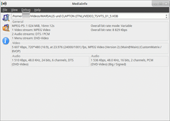

MediaInfo
Dieser Artikel wurde für die folgenden Ubuntu-Versionen getestet:
Ubuntu 16.04 Xenial Xerus
Ubuntu 14.04 Trusty Tahr
Zum Verständnis dieses Artikels sind folgende Seiten hilfreich:
MediaInfo  ist ein Programm, mit dem die technischen und Metadaten von Video- und Audiodateien angezeigt werden können, ähnlich wie bei GSpot
ist ein Programm, mit dem die technischen und Metadaten von Video- und Audiodateien angezeigt werden können, ähnlich wie bei GSpot  für Windows. Das Programm erkennt zahlreiche Audio-, Video- und Containerformate, und das auch bei Internet-Dateien. Eine Übersicht über alle unterstützten Funktionen ist auf der Homepage der Entwickler zu finden. Das Programm steht als kommandozeilenbasierte Anwendung (CLI) und optional auch mit einer GTK-basierten grafischen Benutzeroberfläche (GUI) zur Verfügung.
für Windows. Das Programm erkennt zahlreiche Audio-, Video- und Containerformate, und das auch bei Internet-Dateien. Eine Übersicht über alle unterstützten Funktionen ist auf der Homepage der Entwickler zu finden. Das Programm steht als kommandozeilenbasierte Anwendung (CLI) und optional auch mit einer GTK-basierten grafischen Benutzeroberfläche (GUI) zur Verfügung.
Eine Alternative für die Kommandozeile ist das Programm avprobe oder ffprobe.
Installation¶
 MediaInfo ist seit Ubuntu 12.04 in den offiziellen Paketquellen enthalten. Es müssen die folgenden Pakete installiert [1] werden:
MediaInfo ist seit Ubuntu 12.04 in den offiziellen Paketquellen enthalten. Es müssen die folgenden Pakete installiert [1] werden:
mediainfo (Kommandozeilenversion)
mediainfo-gui (graphische Benutzeroberfläche)
 mit apturl
mit apturl
Paketliste zum Kopieren:
sudo apt-get install mediainfo mediainfo-gui
sudo aptitude install mediainfo mediainfo-gui
Alternativ kann man Fremdpakete herunterladen und manuell installieren, die aktueller sein können. Dies sollte vor der Installation überprüft werden.
Fremdpakete¶
Von der offiziellen Downloadseite  können fertige .deb-Pakete heruntergeladen und manuell installiert werden [2]. Folgende Pakete werden benötigt:
können fertige .deb-Pakete heruntergeladen und manuell installiert werden [2]. Folgende Pakete werden benötigt:
libzen0
libmediainfo0
mediainfo (Kommandozeilenversion)
mediainfo-gui (grafische Benutzeroberfläche)
Die Installation der Pakete muss in dieser Reihenfolge durchgeführt werden.
Hinweis!
Fremdpakete können das System gefährden.
Anmerkung: Fremdpakete werden nicht automatisch aktualisiert!
Bedienung¶
 Nach erfolgreicher Installation ist das Programm bei Ubuntu-Varianten mit einem Anwendungsmenü unter "Multimedia -> MediaInfo" zu finden [3].
Über den Menüpunkt "File -> Open" kann entweder eine einzelne Datei ("open file(s)") oder ein Verzeichnis ("open directory") eingelesen werden. Über "View" kann zwischen verschiedenen Ansichten, unter anderem einer detaillierten HTML-Darstellung, gewechselt werden.
Wer das Programm über die Kommandozeile bedienen möchte, findet im Folgenden weitere Hinweise.
Syntax¶
Die allgemeine Syntax lautet [4]:
mediainfo [OPTIONEN] DATEI__oder__VERZEICHNIS__oder__"STREAMING-URL"
Der Aufruf von:
mediainfo eine_datei.mkv
zeigt Informationen über technische Daten und die Tags der Datei eine_datei.mkv an. Es können mit einem Aufruf mehrere Dateien, Ordner oder auch Streaming-URLs übergeben werden, und das auch untereinander gemischt.
Optionen¶
Mediainfo kennt weitere Optionen, von denen die wichtigsten hier erklärt werden:
| MediaInfo - Optionen | |
| Option | Beschreibung |
--Full , -f | Ausgabe aller internen Tags |
--Inform=<Templates> | Ermöglicht die gezielte Abfrage von Daten anhand von Templates, s. Erweiterte Abfragemöglichkeiten |
--Output=HTML | Gibt die Daten im HTML-Format aus |
--LogFile=<Ausgabedatei> | Speichert die Ausgabe in der Datei Ausgabedatei |
Um eine HTML-Datei report.html mit den technischen Daten der Videos im Verzeichnis ~/Videos zu erstellen, muss MediaInfo wie folgt aufgerufen werden:
mediainfo --Output=HTML --LogFile=report.html '~/Videos'
Eine Übersicht über alle möglichen Optionen findet man über
mediainfo --help
Erweiterte Abfragemöglichkeiten¶
Über die Angabe von Templates können gezielt einzelne Daten abgefragt werden, wie z.B. die Anzahl der Videostreams oder der verwendete Codec. Die Syntax lautet:
mediainfo --Inform=[KATEGORIE;] PARAMETER DATEINAME
Ein Template besteht immer aus einer Kategorie und einem Parameter. KATEGORIE kann dabei einen von folgenden Werten aufnehmen: General, Video, Audio, Text, Chapter, Image, Menu. PARAMETER müssen jeweils mit einem "%" umschlossen und mit einem ";" von der KATEGORIE getrennt werden. Beispiel für einen Parameter wäre z.B. "%FrameCount%" oder "%CodecID/Info%". Alle verfügbaren Templates können über die Option --Info-Parameters abgefragt werden. Das gesamte Template muss in doppelte Anführungszeichen gesetzt werden.
Die Frame-Rate der Videospur der Datei eine_datei.avi kann beispielsweise so abgerufen werden:
mediainfo --Inform="Video;%FrameRate%" eine_datei.avi
Möchte man mehrere Templates abfragen, können diese auch in einer Textdatei definiert werden, die an MediaInfo übergeben wird. Der Aufruf lautet dann:
mediainfo --Inform=file://Template_Datei eine_datei.avi
Die einzelnen Templates werden von einander durch einen Zeilenumbruch getrennt. Beispiel: Die Anzahl der Streams einer Videodatei und das Format der Audiospur kann über folgende Textdatei abgefragt werden:
General;%StreamCount% Audio;%Format%
Links¶
lsdvd - Kommandozeilenwerkzeug für DVDs
Howto/Stream-Adressen ermitteln – hier geht es um den Abschnitt Informationen zu den ermittelten Stream-Adressen anzeigen
Howto/Streaming-Inhalte herunterladen – hier geht es um den Abschnitt Informationen zu den heruntergeladenen Streaming-Dateien anzeigen
- Erstellt mit Inyoka
-
 2004 – 2017 ubuntuusers.de • Einige Rechte vorbehalten
2004 – 2017 ubuntuusers.de • Einige Rechte vorbehalten
Lizenz • Kontakt • Datenschutz • Impressum • Serverstatus -
Serverhousing gespendet von